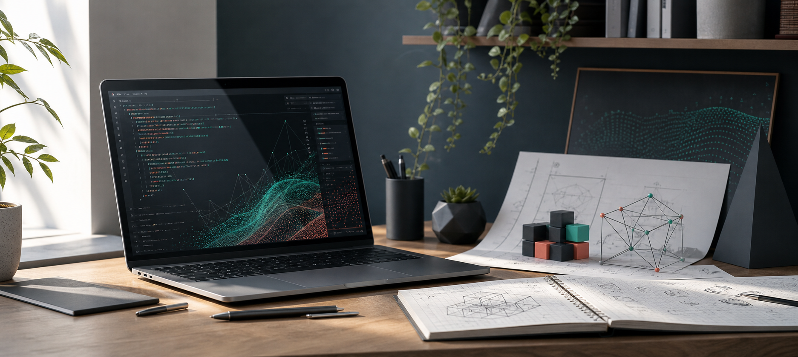

Oregon State University
- Master of Engineering in Computer Science, expected Jun. 2026.
- Minor in Artificial Intelligence, expected Jun. 2026.
- Bachelor of Science in Computer Science, Jun. 2023.
Portfolio home
I am a computer science graduate student at Oregon State University with full stack, AI, database, and game development experience. Choose a section below to expand the details.

I focus on full stack systems, AI-powered data workflows, and interactive applications. My work spans React interfaces, ASP.NET Core and Express APIs, relational databases, PyTorch models, and 3D simulation pipelines.
Vehicle driving simulation focused on collision detection, avoidance systems, realistic physics, Blender assets, Unreal Engine Blueprints, HUD systems, and customization features.
PyTorch and ResNet-based deep learning workflow for zebrafish phenotype and mortality classification from high throughput brightfield imaging data, reaching a 96% F1 score.
REST APIs for a course management site with Docker deployment, JWT authentication, role-based authorization, and backend endpoints that automated 70% of information gathering.
C/C++PythonJavaScriptKotlinC#SQLHTML/CSSSwift
ReactASP.NET CoreExpress.jsDjangoPyTorchTensorFlow
GitLinux/UnixDockerREST APIsUnreal Engine 5BlenderUnity
These are starter portfolio entries based on your resume. When you send screenshots, repos, demos, or writeups, each one can become a deeper case study.
Full stack XML processing and MariaDB workflow application for lab researchers, including validation, error handling, and data visualization support.
Deep learning pipeline using PyTorch, ResNet-18, transfer learning, image preprocessing, augmentation, and evaluation on 4,000+ labeled imaging samples.
Cloud development project with RESTful endpoints, containerized deployment, JWT authentication, and role-based authorization.
Vehicle simulation with collision avoidance, realistic physics, Blender assets, wheel animations, HUD systems, and customization features.
This section is intentionally quiet for now. Later it could become a blog, a photo or design gallery, a research notes page, selected coursework, awards, certifications, or a contact-focused section.